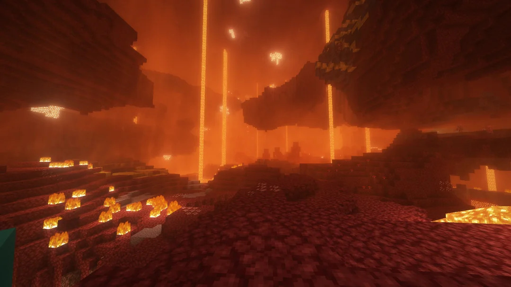
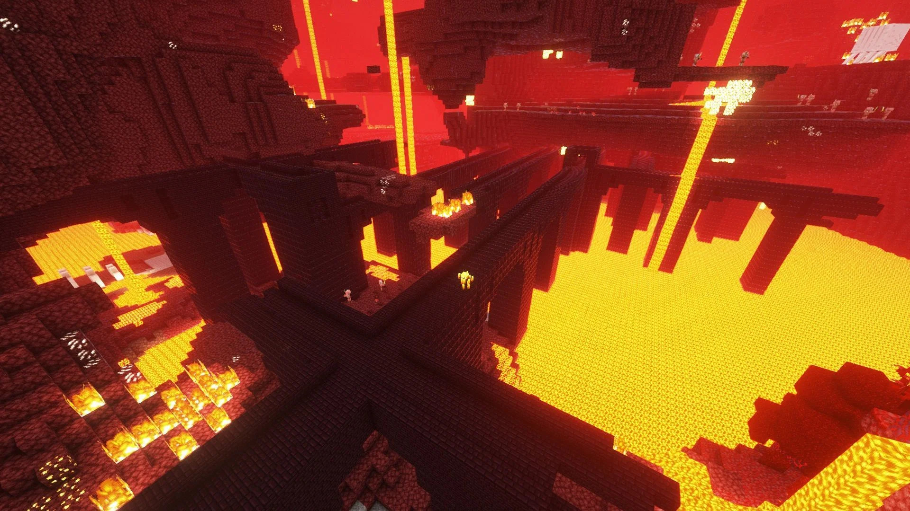

Le Nether
Le Nether est la seconde dimension de minecraft, cette dernière est considéré par beaucoup comme étant la dimension représantant les enfers. On peut y retrouver des grandes étendues de lave, des blocs rouge pour y indiquer la chaleur qu'il y fait et de nombreuses forteresses.
Caractéristiques du Nether
- Biomes variés : Découvrez une multitude de biomes angoissant. Mais prenez garde à ne pas vous y perdre.
- Minerais dans les profondeurs : Il est possible de retrouver différent minerais tel que la netherrite, le meilleur minerais du jeu qui vous permettra de confectionner des armures et des armes très forte.
- Structures : Il est aussi possible de retrouver de grandes structures appelés les forteresses du nether, elles sont caractérisé par leur blocs violet foncé.
Galerie du Nether

